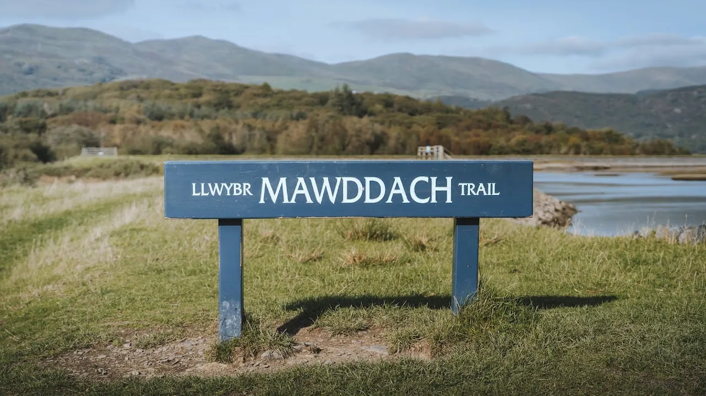
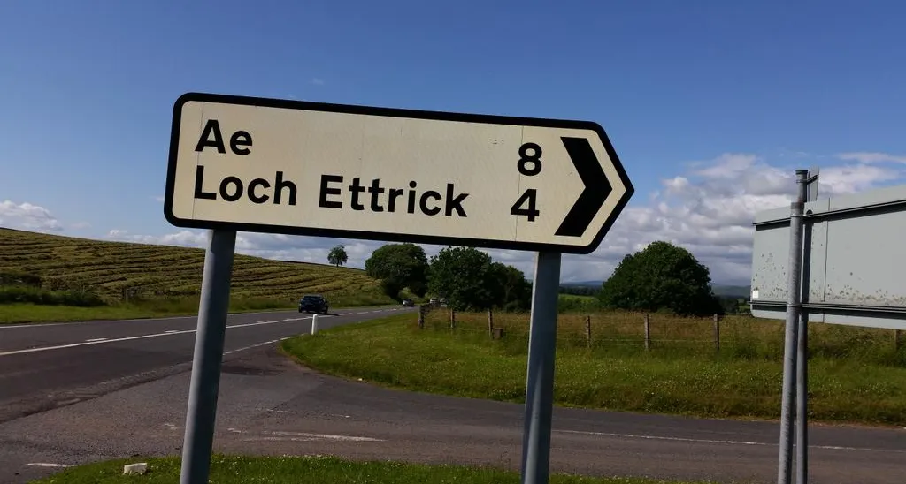
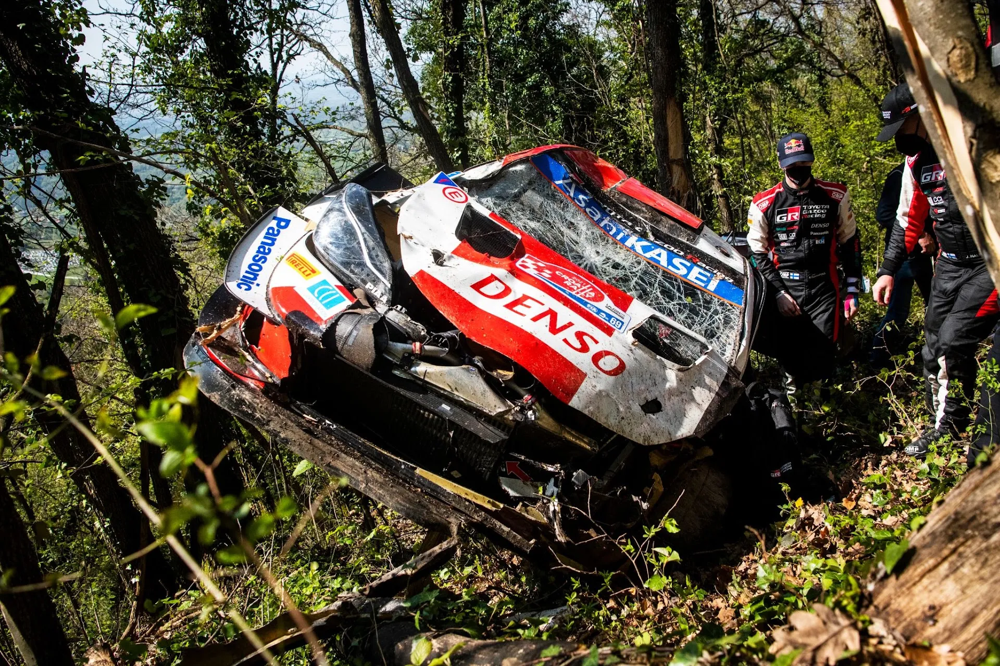
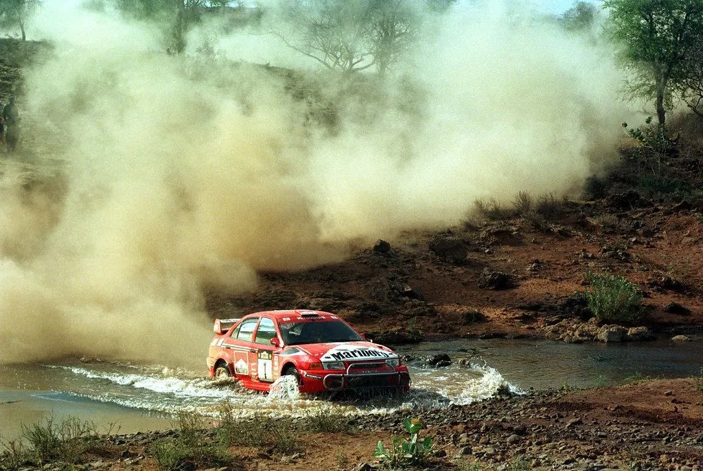
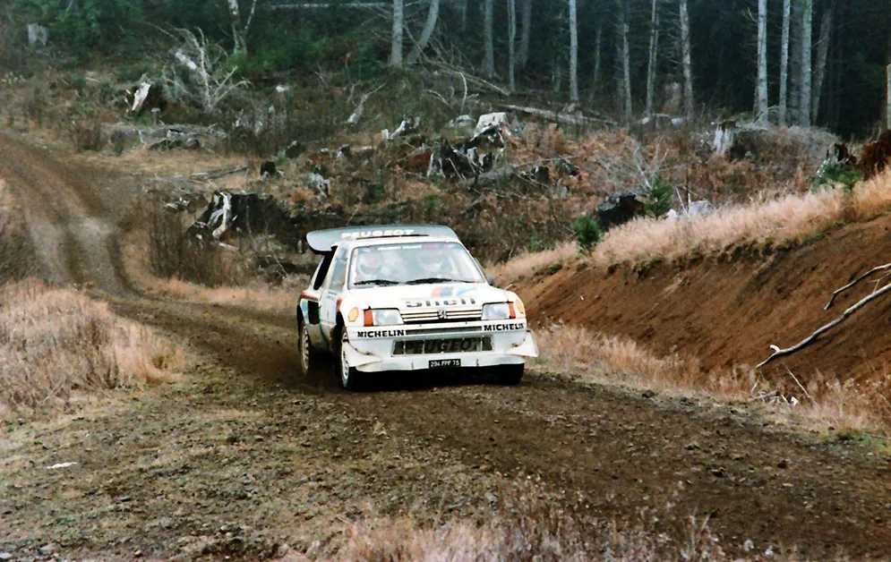

A Retrospective On Weird WRC Stage Names
Most of the time in rallies, a stage gets named after the location it starts from or the location of where the finish is. Sometimes it's both! Other times a stage could be named after a mountain, a river, a road or other geographical features. A somewhat rare, but still possible, way for a stage to get its name, is to be named after a driver, or in honour of someone in the rallying community, like in last week's Rally Scandinavia in the ERC, where there is the Colin's Crest stage. But other times, the reasoning behind the name of the stage can be fuzzy. So in this post we are going to be going over some of the funny and weird stage names in the history of the WRC. No SSS and stages named after sponsors will feature though, as that is would be a bit too easy.

Starting with Europe, the UK has had a lot of stunning stages, and also a history of weird stage names. The Welsh language is known for appearing alien-like to people who don't know how to read it, with stage names like Ae (that's in Scotland), Clocaenog and Maesgwym or Mawwdach, looking like someone just slammed on their keyboard in anger. Some of the English stage names are also interesting. Speech House, Four Ways Crychan, and even a cameo by Shrek in Ogre Hill, are all real stage names from the RAC Rally. Just south of the UK, there's France, a nation with a history in the WRC as rich as the UK's. In 2010, the French took the unpopular decision of moving their WRC round from Corsica to Alsace, and a switch to weirder stage names followed. Grand Ballon, Firstplan and Bitche Camp are all stages that featured in 2010. If we head to the Balkans, Croatia had the Rude stage in 2021, which rudely claimed Kalle Rovanpera, Greece had Aluminio and Bauxites, and Turkey had the Ula stage in 2019. The Iberian peninsula also gave us funny stage names, with Mu and Oliveira de Hospital from Rally Portugal.

Kalle Rovanpera had a Rude awakening in Rally Croatia 2021, crashing out on the Rude stage
(Jaanus Ree / Red Bull Content Pool)
Heading to Africa, Rally Safari is the "star" of the show, with well known stage names like Sleeping Warrior and Hell's Gate. There are some less known ones as well, such as Pipeline from 1993, Lion Hill from 1996 and Olooloitikosh from 1999. Rally Côte d'Ivoire's format didn't have any stages, so there's nothing to pick from there, but fear not, as Morocco was ran once all the way back in 1975, with SS6 being named Rich - Tizi n'Isly. Sticking with the Arab world, Rally Jordan's short but memorable time in the WRC, gave us Baptism Site.

Tommi Makinen won the Olooloitikosh stage, before he was disqualified from 2nd, in 1999.
Moving to the Americas, we have the United States. And boy are the Americans the kings of silliness when it comes to stage names. The brilliantly named "Press-on-Regardless Rally" in the 70s gave us a lot of brilliant stage names, such as: Snowmobile, Rock City, Use at your Owen Risk, A real Gasser, Get 'em Scout, Here Come da Judge and The Scottish. What's amazing that all of these are real, and they were from just 2 versions of the rally! The US didn't stop there unfortunately (or fortunately), with the Olympus Rally also having many weird stage names, like Fuzzy Top Long, Shoot Down, Branding Iron and Eels Hill. South America also has some weird stage names, with Chile giving us Bio Bio and El Puma in 2019.

Juha Kankkunen won almost all of the previously named stages en route to the 1986 Driver's Title!
Lastly, heading to Australia and New Zealand, there are a lot of brilliant stage names. The Aussies have a lot of weird place names, and that shows when it comes to stage names, with Kev's, Flynn's, Coldwater, Upper Clearance, Wedding Bells and Kidney Health all being real stages from Rally Australia. New Zealand is no slouch either, with Girls High School from 2012, Bull from 2004 and 2005, Old Creamery from 1996 and French Pass from 1986, all being brilliant stage names.
Did I miss any? What are some other funny stage names that didn't make it in this post? Let me know in the comments!


Comments